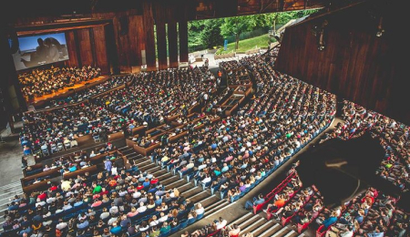
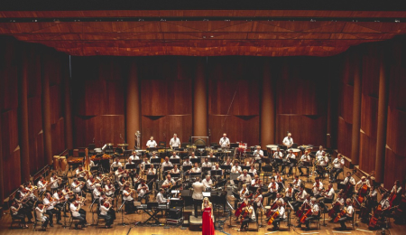
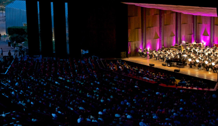

The Planets Concert Experience is delighted to colloborate with The Mann Center for this weekend of concerts. This type of concert is a once in a lifetime opportunity for many musicians and we are delighted to be using so many local musicans that are as passionate about the music as we are. The Mann provides the perfect location for this sort of concert, and its clientele covers a broad range of music enjoyers. We hope you consider spending a night with us this October, please look into the Program Details page for more information on the concert and those who are performing in it.
“Exactly what you want out of a classical music concert. I could tell there was lots of respect for the musicians and what they were playing. The event staff were top notch, prioritizing our enjoyment over anything else. Bravo.”

“Great venue, I could tell a lot of consideration went into the acoustics and sound of the music being played. Muscians were top notch and really understood the material. Had a great time!”
“Great event to go to meet new people with similar interests. Found a lot of people who were also passionate about classical music. The food options were fantastic as well, good variety and lots of local businesses.”
“Event had a great sense of comunnity, and I appreciated how intelligent and knowledgble the conductor and muscians were. I quite liked how the conducter interpreted this work. A must attend for classical music fans.”
The Planets: Concert Experience is a special event being hosted at The Mann Center in Fairmount Park, Philadephia, PA. From Friday October 22nd, to Sunday October 24th, John Smith and the Philadelphia orchestra will play The Planets, orginally composed in 1914-17 by English composer Gustav Holst. There are 7 main components, each representing a particular planet (Pluto had not yet been discovered). The inital reaction to the suite was negative, but quickly critics caught on to its quality. Here at The Mann, conductor John Smith and the Philadelphia Orchestra will perform The Planets, with a small twist. Smith will introduce each planet and give background on how the section was originally composed. All the guests will have access to The Manns ammendities, as well as have free access to various food options in the form of food trucks. Hope to see you all there in late October!

Veteran conductor from the Philadelphia area, John has collaborated with The Mann Center for thrity years. He has a deep appreciation for The Planets, and hopes the performances demonstrate this.
Katie is relatively new to the professional musician scene. She has been widly successful though, having been a member of the Philadelphia orchestra for 5 years.
Rob was a child prodigy, becoming proficient in the cello by the age of 7. He was noticed by John Smith while in high school and the rest is history.
A long-time collaborator with John Smith, Jim has been playing the trumpet for over fifty years. This set of performances marks his 42nd year playing professionally.
Growing up as an immigrant, Chloe has overcome many challenges to pursue her career in music. She has been with the Philadelphia orchestra for 10 years, and is exicted to perform the Planets for the first time.
The Mann Center has ample parking as it has a large campus. On top of that, parking is FREE. The parking lots are also easily accessible and provide an easy walk to the main campus. We occasionally offer transportation to and from the lots, depending.
There is always the presence of the campus security during each and every event at The Mann. There is also a strictly enforced bag policy, which helps prevent any possible emergency. There is also a hot line towards the Philadelphia police if needed.
The show will go on as scheduled during rain or shine. In the event of a severe weather emergency, the event will be postponed and the tickets will be eligible for the new dates. You have the option to refund them if desired.
There is no enforced dress code, as we offer multiple types of events. Since a good portion of the seating could be exposed to weather, dress for the weather.